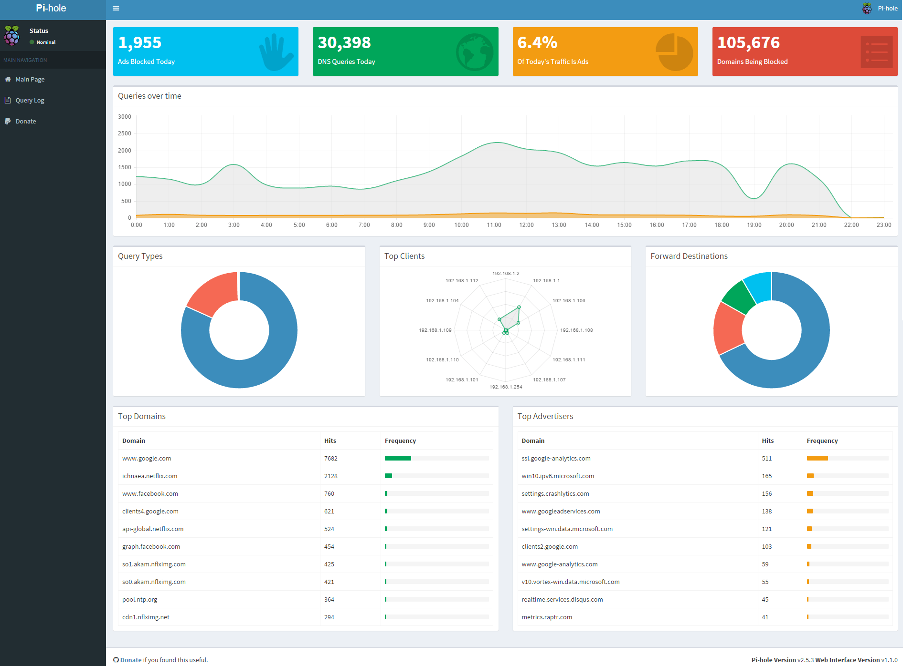
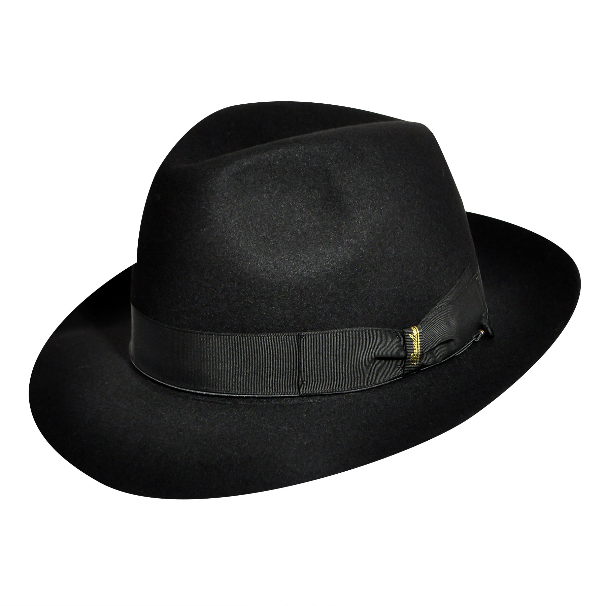

Project#1 Pihole
Voor dit project moesten we een pihole opzetten en configureren. Ik vond dit een zeer leuke opdracht, aangezien ik dit een zeer interessant onderwerp vond om rond te werken. Ik ben dan ook aan dit project begonnen door veel opzoekwerk te doen. Uiteindelijk heb ik ervoor gekozen om gaandeweg bij te leren en meteen aan het project zelf te beginnen.


Technical description
- Via de linuxdistro Fedora
- Veel opzoekwerk op fora
- Veel troubleshooting
- Veel testen of het ads blokeert
Het project zelf
Over het algemeen ben ik heel blij met het resultaat van mijn project. Na veel te proberen en zeer veel te testen staat het echt op punt. Het controlepaneel zier er ook heel clean uit en werkt goed. Ik heb zeer veel kunnen bijleren door dit project te mogen doen, en ik ben nog steeds onder de indruk van gemakkelijk het dit is eenmaal je weet hoe het moet.
